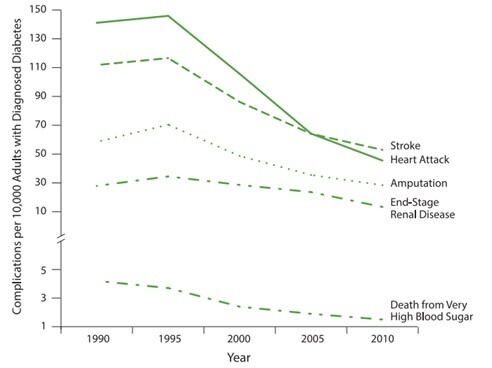

Diabetes is a group of diseases characterized by high blood sugar. When a person has diabetes, the body either does not make enough insulin or is unable to use its own insulin well. If blood sugar builds up in the body and its levels are not controlled, it can lead to serious health complications, such as heart disease, stroke, kidney disease, blindness, amputations of the legs and feet, and early death.
Prediabetes: People with prediabetes have blood sugar levels that are higher than normal, but not high enough to be considered diabetes. Prediabetes can put people at increased risk of developing type 2 diabetes, heart disease, and stroke.
More than 29 million Americans have diabetes; 1 in 4 doesn’t know.
National Diabetes Statistics Report, 2014 (based on health data from 2012), include:
- 29 million people in the United States (9.3 percent) have diabetes.
- 1.7 million people aged 20 years or older were newly diagnosed with diabetes in 2012.
- 208,000 people younger than 20 years have been diagnosed with diabetes (type 1 or type 2).
- 86 million adults aged 20 years and older have pre diabetes that’s 1 out of 3 adults! 9 out of 10 of them don’t even know they have it.
- Without intervention, 15% to 30% of people with prediabetes will develop type 2 diabetes within 5 years.
- Diagnosed: 21.0 million people.
- Undiagnosed: 8.1 million people ( 27.8% of people with diabetes are undiagnosed).
Even more alarming, it’s now beginning to show up in teenagers and children. More than 24 million Americans have diabetes; of those, about 6 million don’t know they have the disease. If the spread of type 2 diabetes continues at its present rate, the number of people diagnosed with diabetes in the United States will increase from about 16 million in 2005 to 48 million in 2050. Worldwide, the number of adults with diabetes will rise from 285 million in 2010 to 439 million in the year 2030.
Diabetes Mellitus affects an estimated 23.6 million people in the United States and is the 7th leading cause of death. Diabetes
- Lowers life expectancy by up to 15 years.
- Increases the risk of heart disease by 2 to 4 times.
- Is the leading cause of kidney failure, lower limb amputations, and adult-onset blindness.
Due to the steady rise in the number of persons with Diabetes mellitus, and possibly earlier onset of type 2 DM, there is growing concern about diabetes.
Long – term complication of diabetes include heart disease and renal, nerve, and retinal damage.
Diagnosed and undiagnosed diabetes prevalence among adults aged 20 and over, by age: United states 1988 – 1994 and 2009 – 2012.
Source: CDC/NCHS, Health, United states, 2014
Diabetes significantly increases the risk of heart disease. And it’s the seventh leading cause of death in the U.S., directly causing almost 70,000 deaths each year and contributing to thousands more. The prevalence of diabetes increases with age. In 2009– 2012, 3.7% of adults aged 20–44, 16.2% of adults aged 45–64, and 26.8% of adults aged 65 and over had diabetes.
Prevalence of diabetes mellitus in Asian Indians is much higher than in whites, blacks, and Hispanics living in the United States. Nearly 30 Million Americans are living with diabetes 90 – 95% have type 2 diabetes.
| Health, United States, 2014: At Glance |
| Death per 100,000 population, age – adjusted |
Value ( Year) |
| Diabetes |
25.0
(2000) |
21.2
(2012) |
21.2
(2013) |
| Diabetes, Morbidity and Risk Factors |
|
| 20 years and over |
9.8
(1999 –2002) |
10.9
(2003– 2006) |
12.3
(2009 -2012) |
Source: Health, United States, 2014
In 2009 – 2012, about 2 in 10 (18.9%) of those aged 55 – 64 had diabetes.
The high prevalence of diabetes in Asian Indians may be due to innate susceptibilities for β-cell dysfunction in this high risk population.
Number of US Adults aged 18 or older with Diagnosed Diabetes, 1980 - 2012
Source: National Diabetes Surveillance System, National Health Interview Survey data
Over the past 32 years, from 1980 through 2012, the number of adults with diagnosed diabetes in the united states nearly quadrupled, from 5.5 million to 213 million. Among adults, about 1.7 million new cases of diabetes are diagnosed each year. If this trend continues, as many as 1 out of every 3 adults in the united states could have diabetes by 2050.
Trends in rates of diabetes complications among US adults with Diagnosed Diabetes 1990 – 2010.

Adapted from: Gregg EW,Li Y,Wang J,et al. Changes in diabetes-related complications in the United States, 1990-2010
Emerging Issues in Diabetes
Evidence is emerging that diabetes is associated with additional comorbidities including:
- Cognitive impairment
- Incontinence
- Fracture risk
- Cancer risk and prognosis
The good news is that type 2 diabetes is largely preventable. About 9 cases in 10 could be avoided by taking several simple steps: keeping weight under control, exercising more, eating a healthy diet, and not smoking. In addition to the millions of adults with diabetes, another 57 million adults have “pre-diabetes".